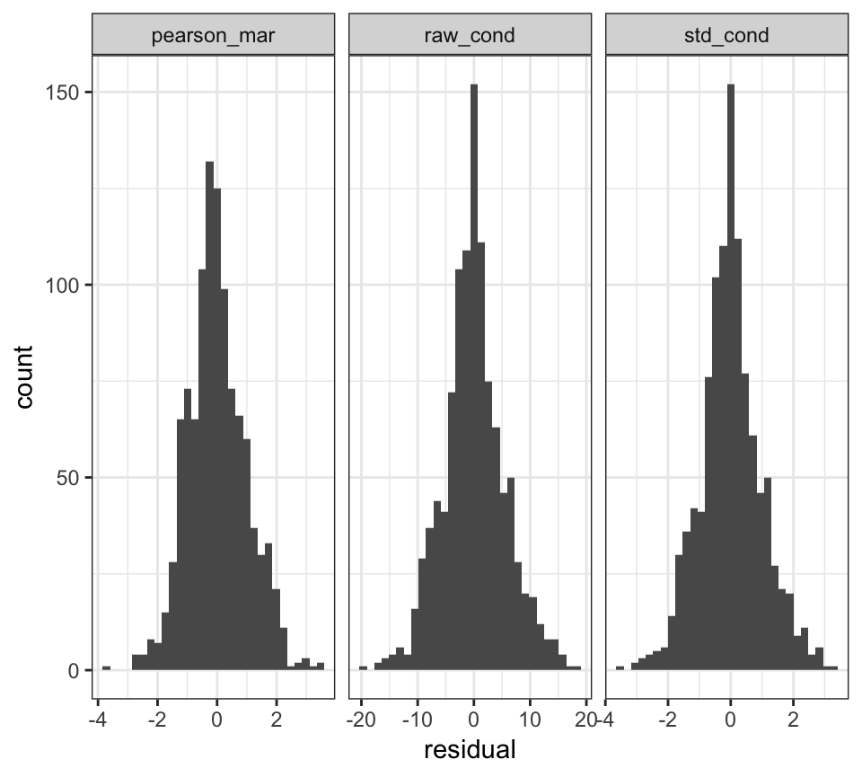

redres: Redress Your Mixed Model Assumptions
R Package Version 0.1.0.9
2019-04-28
Source:vignettes/redres-vignette.Rmd
redres-vignette.RmdIntroducing redres
Overview
(motivation for the package on having tools for diagnosing mixed models) The Merriam-Webster dictionary defines redress as “to set right”.
Package Structure
(describe the three ways to use the package)
redres contains various functions that provide different ways to assess model assumptions for linear mixed models fit using lmer. The function range from returning a vector of residuals to be used by the user as desired to opening a Shiny app that allows the user to interactively assess the model with package provided tools. A brief description of each function is listed below.
- redres: computes and returns residuals given a model and a specified residual type
- plot_redres: creates a plot of residuals versus fitted values for a given residual type
- plot_resqq: creates a normal quantile plot for conditional residuals
- plot_raneff: creates a normal quantile plot for the random effects
- redres_app: opens an interactive Shiny app with
Installation
The package can be installed from GitHub using devtools and then loaded in the normal way.
# Installs redres from GitHub
devtools::install_github("goodekat/redres")# Loads the package
library(redres)Example Data
# Prints the first 6 rows of the paprika data
head(paprika)
#> # A tibble: 6 x 5
#> rep treatment variety plant height
#> <fct> <fct> <fct> <fct> <dbl>
#> 1 1 T1 C1 1 23.5
#> 2 1 T1 C1 2 21.5
#> 3 1 T1 C1 3 31.2
#> 4 1 T1 C1 4 22.1
#> 5 1 T1 C1 5 31.5
#> 6 1 T1 C1 6 26
# Loads the lme4 libraries
library(lme4)
#> Loading required package: Matrix
m <- lmer(height ~ rep + treatment*variety +
(1|rep:treatment) +
(1|rep:treatment:variety),
data = paprika)Extracting Residuals
One of the ways to utilize redres is to extract residuals from a model fit using lmer. This can be done using the main function in the package named redres to compute residuals based on a specified type.
Residual Types
The linear mixed effects model can be written as \[\textbf{Y}=\textbf{X}\boldsymbol{\beta}+\textbf{Z}\boldsymbol{\gamma}+\boldsymbol{\epsilon}\] where
- \(\textbf{Y}\) is an \(n\times 1\) vector of \(n\) response variable observations,
- \(\textbf{X}\) is an \(n\times p\) matrix of \(p\) explanatory variables with \(n\) observations each,
- \(\boldsymbol{\beta}\) is a \(p\times1\) vector of unknown fixed effects parameters,
- \(\textbf{Z}\) is an \(n\times q\) matrix of \(q\) random effect variables with \(n\) observations each,
- \(\boldsymbol{\gamma}\) is a \(q\times1\) vector of unknown random effects, and
- \(\boldsymbol{\epsilon}\) is an \(n\times1\) vector of random errors.
Under this set up, \[E[\textbf{Y}]=\textbf{X}\boldsymbol{\beta} \ \ \ \mbox{ and } \ \ \ Var[\textbf{Y}]=\textbf{ZGZ}'+\textbf{R}=\textbf{V}.\]
It is assumed that \[ \begin{bmatrix} \boldsymbol{\gamma} \\ \boldsymbol{\epsilon} \end{bmatrix} \sim N \begin{pmatrix} \begin{bmatrix} \boldsymbol{0} \\ \boldsymbol{0} \end{bmatrix}, \begin{bmatrix} \textbf{G} & \boldsymbol{0} \\ \boldsymbol{0} & \textbf{R} \end{bmatrix} \end{pmatrix}. \]
redres can compute six types of residuals. These include some types not available in lme4, and some of the types are computed differently in redres than lme4. These changes were made to make the choices of type names more intuitive with the computations used. The formulas for how these are computed in redres are listed below.
Raw Residuals
The raw residuals are computed as the observed response values minus the predicted response values where the marginal version does not account for the random effects while the conditional version does. These are computed as follows.
marginal raw residuals \[r^m_i = Y_i-\textbf{x}'_i\widehat{\boldsymbol{\beta}}\]
conditional raw residuals \[r^c_i = Y_i-\textbf{x}'_i\boldsymbol{\widehat{\beta}}-\textbf{z}'_i\widehat{\boldsymbol{\gamma}}\]
Pearson Residuals
The Pearson residuals are computed as the raw residuals divided by the square root of the estimated variance of the response values. Both marginal and conditional versions are available as follows.
marginal Pearson residuals \[r^{m,Pearson}_{i} = \frac{r^m_i}{\sqrt{\widehat{Var}[Y_i]}}\]
conditional Pearson residuals \[r^{c,Pearson}_{i} = \frac{r^c_i}{\sqrt{\widehat{Var}[Y_i|\boldsymbol{\gamma}]}}\]
Studentized
The studentized residuals are computed as the raw residuals divided by the square root of the estimated variance of the raw residuals. Again, both marginal and conditional versions are available.
marginal Pearson residuals \[r_i^{m,std}=\frac{r_i^m}{\sqrt{\widehat{Var}[r_i^m]}}\]
conditional studentized residuals \[r_i^{c,std}=\frac{r_i^c}{\sqrt{\widehat{Var}[r_i^c]}}\]
Note that \[\widehat{Var}[\textbf{r}^m]=\widehat{\textbf{V}}-\textbf{Q} \ \ \ \mbox{ and } \ \ \ \widehat{Var}[\textbf{r}^c]=\textbf{K}\left(\widehat{\textbf{V}}-\textbf{Q}\right)\textbf{K}'.\] The values of \(\textbf{Q}\) and \(\textbf{K}\) are defined as follows by by Gregoire, Schabenberger, and Barrett (1995).
\[\textbf{Q}=\textbf{X}(\textbf{X}'\widehat{\textbf{V}}^{-1}\textbf{X})^{-}\textbf{X}' \ \ \ \mbox{ and } \ \ \ \textbf{K}=\textbf{I}-\textbf{Z}\widehat{\textbf{G}}\textbf{Z}'\widehat{\textbf{V}}^{-1}\]
Usage
The function redres can compute the residuals types defined in the previous section for models fit using lmer.
Inputs
-
model: A model fit usinglmerfor which the residuals will be computed. -
type: A character string identifying the type of residual that will be computed. By default, the raw conditional residuals are returned. The following are the options available for type.-
"pearson_cond": Pearson conditional residuals -
"pearson_mar": Pearson marginal residuals -
"raw_cond": raw conditional residuals (default) -
"raw_mar": raw marginal residuals -
"std_cond": studentized conditional residuals -
"std_mar": studentized marginal residuals
-
See the section on residual types for details on how the residuals are computed and their purpose.
Output
-
redresreturns a vector of residuals according to the type specified in the order that the data observations are input intolmer.
Functionality
The code below demonstrates the use of redres to compute several types of residuals from the model m. These residuals are put into a dataframe and joined with the sleepstudy data.
# Computes the default residuals (raw conditional)
raw_cond <- redres(m)
# Computes the Pearson marginal residuals
pearson_mar <- redres(m, type = "pearson_mar")
# Computes the studentized conditional residuals
std_cond <- redres(m, type = "std_cond")
# Joins the residuals to the paprika data
paprika_plus <- cbind(paprika, raw_cond, pearson_mar, std_cond)
# Prints the head of the dataframe
head(paprika_plus)
#> rep treatment variety plant height raw_cond pearson_mar std_cond
#> 1 1 T1 C1 1 23.5 -0.8171447 0.28484517 -0.1476290
#> 2 1 T1 C1 2 21.5 -2.8171447 0.04144796 -0.5089579
#> 3 1 T1 C1 3 31.2 6.8828553 1.22192446 1.2434874
#> 4 1 T1 C1 4 22.1 -2.2171447 0.11446712 -0.4005593
#> 5 1 T1 C1 5 31.5 7.1828553 1.25843404 1.2976867
#> 6 1 T1 C1 6 26.0 1.6828553 0.58909169 0.3040322The user can then use these residuals as desired. For example, the user could make their own plots or perform tests on the residuals. The code below creates histograms of the three residual types.
# Loads helpful libraries
library(dplyr)
library(tidyr)
library(ggplot2)
# Creates histograms of the residual types
paprika_plus %>%
gather(key = "type", value = "residual", 6:8) %>%
ggplot(aes(x = residual)) +
geom_histogram(bins = 30) +
facet_grid(. ~ type, scales = "free") +
theme_bw()
Plotting Residuals
Quantile plots
Quantile plots are used to verify visually if data follows are particular distribution. Data points are plotted along the quantiles of the assumed distributed. The data is expected to follow an approximately straight line, at least along the middle quantiles. The points are assessed for any extreme curvation that would indicate a departure from the assumed distribution. Typically curvature at the extreme ends of the quantiles (around 0 and 1) are ignored as data is sparse here and distributions behave more erratically at the boundaries of the parameter space. We have added confidence bands to guide the user.
The function plot_ranef plots each random effect vector along the normal quantiles. From the assumptions of the linear mixed model, each random effect specified - along with the error term - is assumed to follow a normal distribution. Therefore, these plots can be used to assess if this assumption is met. Note that the number of plots generated by this function will vary for each model, with the number of plots being the number of random effects.
Usage
plot_redres
The function plot_redres is included in the package to allow for the easy creation of a residual plot using ggplot2 for a linear mixed model fit using lmer. plot_redres allows the user to specify any residual type to be plotted on the y-axis including those not provided by lme4.
Inputs
-
model: A model fit usinglmerfor which the residuals will be computed. -
type: A character string identifying the type of residual that will be computed. The same options available withredresare available forplot_redres. By default, the conditional raw residuals are plotted.
Output
- A
ggplot2object of a scatterplot of the model residuals of the type specified versus the fitted values is created.
Functionality
The code below shows how to create the most basic plot using plot_redres. By inputting the model m, a plot of the conditional raw residuals versus the fitted values is returned.
# Creates the default residual plot
plot_redres(m)
The type of residuals can be changed using the type option as shown in the code below.
# Creates the residual plot with studentized marginal residuals
plot_redres(m, type = "std_mar")
All plots created using the redres package are formatted to use theme_bw from ggplot2. However, since plot_redres returns a ggplot object, it is possible to use functions provided by ggplot2 adjust the formatting of the plot.
# Applies ggplot2 formatting functions to the output from plot_resid
library(ggplot2)
plot_redres(m, type = "pearson_cond") +
theme_classic() +
labs(title = "Residual Plot")
Interacting with Residuals
Shiny App
The function redres_app includes a shiny app that helps demonstrate how the plotting functions plot_redres, plot_resqq and plot_ranef can be used. It can also be used to visually comparing two linear mixed models and conducting model selection through pairwise comparison.
Inputs
-
model: A model (or two models wrapped in a list) fit usinglmer.
Output
- A
shinyapp.
Functionality
The code below shows how to create a shiny app. By inputting the model m (could be a list of two models), a shiny app which has two main tabs, one includes the residual plot with a choice of all residual types and a choice of different x-axis variables and another one includes the normal quantile plots is returned.